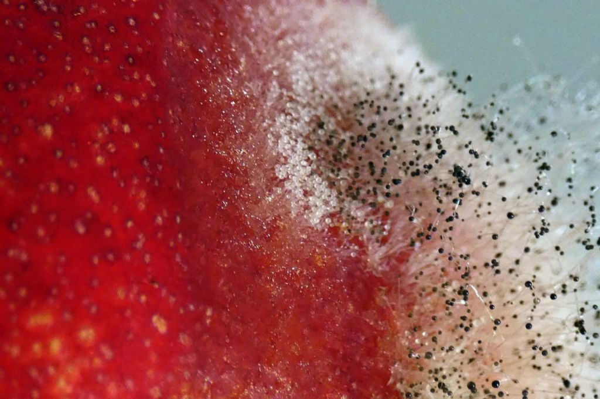
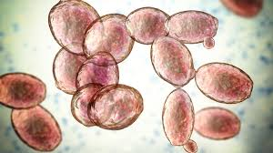
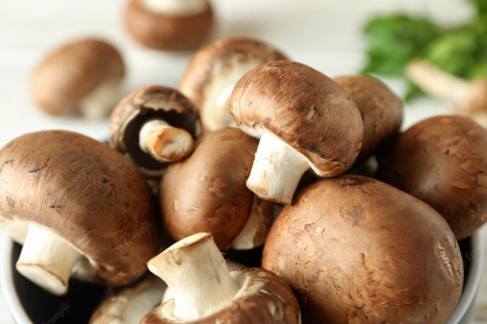
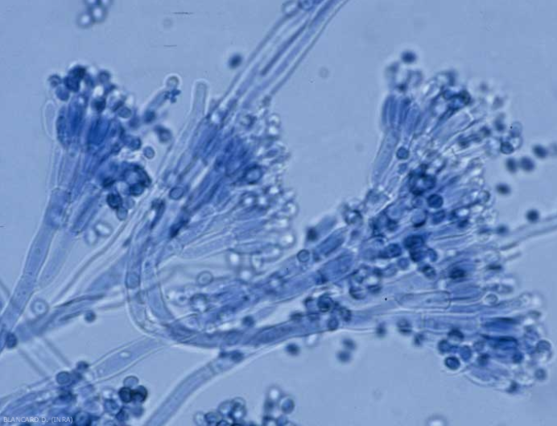

Tipos de hongos
Existen muchos tipos de hongos en la naturaleza. A continuación se presentan los principales grupos, según su forma de vida y estructura:
Mohos
Son hongos multicelulares con aspecto algodonoso o polvoriento. Crecen sobre alimentos, paredes húmedas o materia en descomposición. Forman estructuras llamadas esporangios donde producen esporas.

Ejemplo: Rhizopus stolonifer (moho del pan).
Levaduras
Son unicelulares y se reproducen por gemación. Se usan en la fermentación de alimentos y bebidas, como el pan y la cerveza.

Ejemplo: Saccharomyces cerevisiae.
Setas o hongos superiores
Son estructuras visibles, llamadas cuerpos fructíferos, que emergen del suelo o de madera. En realidad, son solo una parte del hongo, ya que la mayor parte está bajo tierra (micelio).

Ejemplo: Agaricus bisporus (champiñón común).
Hongos microscópicos y patógenos
Algunos hongos causan enfermedades en humanos, animales o plantas. Otros se usan en medicina (como el Penicillium, productor de antibióticos).

Curiosidad: Algunos hongos brillan en la oscuridad (bioluminiscencia) y otros se asocian con raíces de plantas (micorrizas), ayudando a su nutrición.